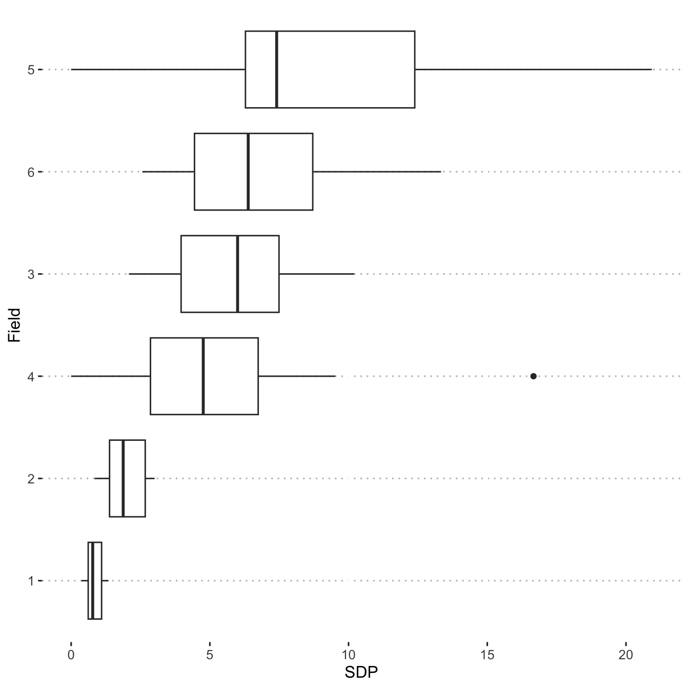
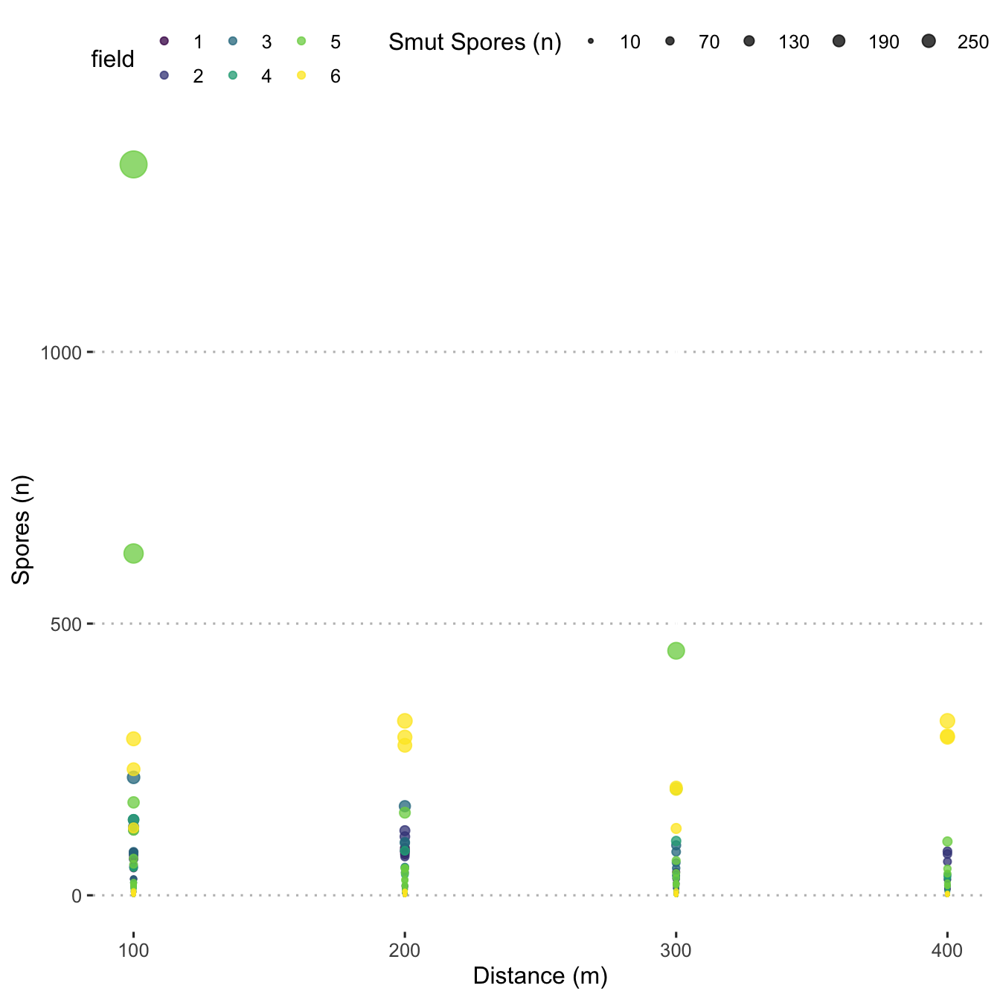
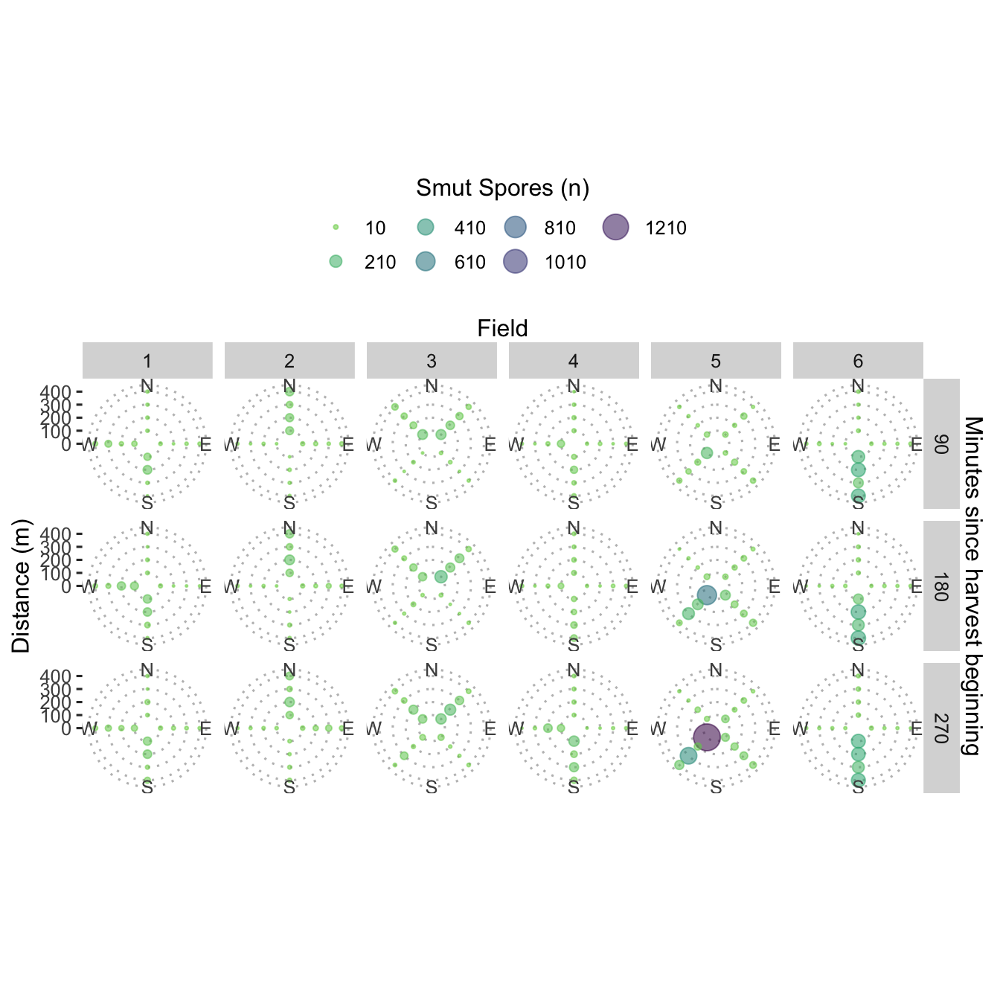

Visualise data
Load libraries
library("knitr")
library("tidyverse")
library("ggpubr")
library("here")theme_set(theme_pubclean())
central_top_legend <- theme(
legend.position = "top",
legend.justification = "center",
legend.direction = "horizontal",
legend.background = element_blank(),
legend.key = element_blank()
)Load data
load(here("data/meteo_data.Rdata"))
load(here("data/mod_dat.Rdata"))
sdp_dat <- read_csv(here("data/sdp_data.csv"),
show_col_types = FALSE) %>%
arrange(field)Plot severely damaged pod indices
Visualize peanut smut incidence in the fields.
ggplot(data = sdp_dat) +
aes(y = reorder(field, SDP), x = SDP) +
geom_boxplot() +
ylab("Field")
ggline(sdp_dat,
x = "field",
y = "inc",
add = c("mean_se", "jitter")) +
xlab("Field") +
ylab("SDP Incidence")Plot spore dispersal density
Plot spore count densities
Create a density plot of the observed spore dispersal values.
ggplot(mod_dat, aes(y = n_spore)) +
geom_density()
Create a scatter plot and use stat_smooth() to fit a
line.
spore_dot_density_by_distance <- mod_dat %>%
ggplot(aes(x = distance_m, y = n_spore)) +
geom_point() +
scale_fill_viridis_c() +
geom_smooth(
col = "grey50",
method = "gam",
formula = y ~ s(x, bs = "cs", k = 3)
) +
labs(y = "Spores (n)",
x = "Distance (m)") +
facet_grid(. ~ time_slice)
spore_dot_density_by_distance
Create box plots showing spore distribution at the four distances.
ggplot(mod_dat,
aes(
x = as.factor(distance_m),
y = n_spore,
)) +
geom_boxplot() +
scale_fill_viridis_d() +
scale_colour_viridis_d() +
labs(y = "Spores (n)",
x = "Distance (m)")ggplot(mod_dat,
aes(
x = as.factor(distance_m),
y = n_spore,
colour = field,
fill = field
)) +
geom_boxplot() +
scale_fill_viridis_d() +
scale_colour_viridis_d() +
labs(y = "Spores (n)",
x = "Distance (m)") +
facet_grid(. ~ field)Create a point plot showing spore density distribution over distance for each field.
ggplot(data = mod_dat,
aes(x = distance_m,
y = n_spore,
size = n_spore,
colour = field)) +
geom_point(alpha = 0.75) +
scale_size(
range = c(0.25, 6),
name = "Smut Spores (n)",
breaks = seq(10, 300, by = 60)
) +
scale_colour_viridis_d() +
labs(y = "Spores (n)",
x = "Distance (m)") +
central_top_legend
Filter and plot by downwind only
mod_dat$degree_com <-
ifelse(
mod_dat$degree_dif < -180,
-360 +
mod_dat$trap_degrees +
mod_dat$wind_degrees,
ifelse(
mod_dat$degree_dif < 180,
mod_dat$degree_dif,
360 - mod_dat$trap_degrees + mod_dat$wind_degrees
)
)
mod_dat$degree_com <- abs(mod_dat$degree_com)
all_data <- mod_dat %>%
mutate_at(vars(time_slice), as.factor)
all_data$degree_group <-
cut(
all_data$degree_com,
breaks = c(0, 45, 135, 180),
labels = c("upwind", "cross wind", "downwind"),
include.lowest = TRUE
)
all_data2 <- all_data %>% filter(degree_group == "downwind")
ggplot(all_data2,
aes(x = as.factor(distance_m), y = n_spore,
fill = time_slice)) +
geom_bar(stat = "identity", position = position_dodge(width = 0.60)) +
scale_fill_viridis_d(name = "Time slice (min)") +
labs(y = "Spores (n)",
x = "Distance (m)") +
labs(subtitle = "Smut spores trapped downwind") +
facet_wrap(. ~ field,
ncol = 3) +
central_top_legendggsave(
last_plot(),
file = "plots_manuscript/spores_downwind.png",
width = 8,
height = 5,
units = "cm",
dpi = 300,
scale = 3
)
ggsave(
last_plot(),
file = "plots_manuscript/spores_downwind.eps",
device = cairo_ps,
fallback_resolution = 600,
width = 8,
height = 5
)Check windspeed effect
Create a scatter plot to display the number of spores by wind speed.
ggplot(data = mod_dat, aes(x = wind_speed, y = n_spore)) +
scale_fill_viridis_c() +
geom_point() +
geom_smooth(
col = "grey50",
method = "gam",
formula = y ~ s(x, bs = "cs", k = 3)
) +
labs(y = expression(Spores / cm ^ {
2
}),
x = "Wind Speed (m/s)") +
central_top_legend +
guides(fill = guide_legend(title.position = "top",
title.hjust = 0.5)) +
facet_wrap(. ~ field)
Polar coordinates
Create polar coordinate plots that display spore density in each
cardinal direction. Note that the 270 minute traps were deployed from
time 0 to 270 minutes, 180 from 0 to 180, and 90 from 0 to 90. So, here
the figure shows an additive effect of the number of spores that were
captured over time. These are not discrete time_slices
shown here, they do overlap.
ggplot(data = mod_dat) +
aes(
x = trap_degrees,
y = distance_m,
colour = n_spore,
size = n_spore
) +
facet_grid(time_slice ~ field) +
coord_polar(theta = "x",
start = 0,
direction = 1) +
geom_count(alpha = 0.55) +
scale_colour_viridis_c(
direction = -1,
name = "Smut Spores (n)",
guide = "legend",
breaks = seq(10, 1410, by = 200),
begin = 0,
end = 0.8
) +
scale_size(
range = c(0.25, 6),
name = "Smut Spores (n)",
breaks = seq(10, 1410, by = 200),
) +
scale_x_continuous(
breaks = c(0, 90, 180, 270),
expand = c(0, 0),
limits = c(0, 360),
labels = c("N", "E", "S", "W"),
sec.axis = sec_axis(
~ . ,
name = "Field",
breaks = NULL,
labels = NULL
)
) +
scale_y_continuous(
breaks = c(0, 100, 200, 300, 400),
limits = c(0, 400),
sec.axis = sec_axis(
~ . ,
name = "Minutes since harvest beginning",
breaks = NULL,
labels = NULL
)
) +
ylab("Distance (m)") +
xlab("") +
central_top_legend +
guides(color = guide_legend(title.position = "top",
title.hjust = 0.5))
Plot wind data
Wind roses
Using a modified wind_rose() from {clifro}, create
windrose plots to visualise wind speeds and directions during the
harvest and spread events.
Five minute data (raw) wind roses
library(scales)
facet <- m$field
facet_row <- m$time_slice
speed <- m$wind_speed
direction <- m$wind_degrees
calm_wind <- 0
n_speeds <- 5
variable_wind <- 990
n_directions <- 12
optimal_n_dir = seq(1, 45, 2) * 4
n_directions = optimal_n_dir[which.min(abs(n_directions - optimal_n_dir))]
## Create factor variable for wind direction intervals
dir_bin_width = 360 / n_directions
dir_bin_cuts = seq(dir_bin_width / 2, 360 - dir_bin_width / 2, dir_bin_width)
dir_intervals = findInterval(c(direction, dir_bin_cuts), dir_bin_cuts)
dir_intervals[dir_intervals == n_directions] = 0
factor_labs = paste(c(tail(dir_bin_cuts, 1), head(dir_bin_cuts, -1)),
dir_bin_cuts, sep = ", ")
dir_bin = head(factor(dir_intervals, labels = paste0("(", factor_labs, "]")),
-n_directions)
## Create a factor variable for wind speed intervals
spd_bin <- cut_interval(speed, n_speeds)
## Create the dataframe suitable for plotting
ggplot_df = as.data.frame(table(dir_bin, spd_bin, facet, facet_row))
ggplot_df$proportion = unlist(by(ggplot_df$Freq, ggplot_df$facet,
function(x)
x / sum(x)),
use.names = FALSE)
ggplot_df$proportion <- ggplot_df$proportion * length(unique(facet_row))
wr_5min <- ggplot(data = ggplot_df,
aes(x = dir_bin,
fill = spd_bin,
y = proportion)) +
geom_bar(stat = "identity", position = position_stack(reverse = TRUE)) +
scale_x_discrete(
breaks = levels(ggplot_df$dir_bin)[seq(1, n_directions, n_directions / 4)],
labels = c("N", "E", "S", "W"),
drop = FALSE
) +
scale_fill_viridis_d(name = "Wind speed (m/s)", direction = -1) +
coord_polar(start = 2 * pi - pi / n_directions) +
scale_y_continuous(labels = percent_format()) +
theme(axis.title = element_blank()) +
facet_grid(facet ~ facet_row) +
guides(fill = guide_legend(nrow = 2, byrow = TRUE)) +
ggtitle(label = "Five minute wind speed (m/s) and direction (˚)")
wr_5minModel data (summarised by time slice) wind roses
This is the wind data that is used in the model.
facet <- mod_dat$field
facet_row <- mod_dat$time_slice
speed <- mod_dat$wind_speed
direction <- mod_dat$wind_degrees
calm_wind <- 0
n_speeds <- 5
variable_wind <- 990
n_directions <- 12
optimal_n_dir = seq(1, 45, 2) * 4
n_directions = optimal_n_dir[which.min(abs(n_directions - optimal_n_dir))]
## Create factor variable for wind direction intervals
dir_bin_width = 360 / n_directions
dir_bin_cuts = seq(dir_bin_width / 2, 360 - dir_bin_width / 2, dir_bin_width)
dir_intervals = findInterval(c(direction, dir_bin_cuts), dir_bin_cuts)
dir_intervals[dir_intervals == n_directions] = 0
factor_labs = paste(c(tail(dir_bin_cuts, 1), head(dir_bin_cuts, -1)),
dir_bin_cuts, sep = ", ")
dir_bin = head(factor(dir_intervals, labels = paste0("(", factor_labs, "]")),
-n_directions)
## Create a factor variable for wind speed intervals
spd_bin <- cut_interval(speed, n_speeds)
## Create the dataframe suitable for plotting
ggplot_df = as.data.frame(table(dir_bin, spd_bin, facet, facet_row))
ggplot_df$proportion = unlist(by(ggplot_df$Freq, ggplot_df$facet,
function(x)
x / sum(x)),
use.names = FALSE)
ggplot_df$proportion <- ggplot_df$proportion * length(unique(facet_row))
wr_model <- ggplot(data = ggplot_df,
aes(x = dir_bin,
fill = spd_bin,
y = proportion)) +
geom_bar(stat = "identity", position = position_stack(reverse = TRUE)) +
scale_x_discrete(
breaks = levels(ggplot_df$dir_bin)[seq(1, n_directions, n_directions / 4)],
labels = c("N", "E", "S", "W"),
drop = FALSE
) +
scale_fill_viridis_d(name = "Wind speed (m/s)", direction = -1) +
coord_polar(start = 2 * pi - pi / n_directions) +
scale_y_continuous(labels = percent_format()) +
theme(axis.title = element_blank()) +
facet_grid(facet ~ facet_row) +
guides(fill = guide_legend(nrow = 2, byrow = TRUE)) +
ggtitle(label = "Wind speed (m/s) and direction (˚)",
subtitle = "Mean values per time slice")
wr_modelWind Speed per Time Slice per Field
load(file = here("data/meteo_data.Rdata"))
ws <- ggplot(data = m, aes(x = minute_lap, y = wind_speed)) +
geom_vline(xintercept = c(90, 180), lty = "dashed") +
geom_text(aes(label = "90",
x = 90,
y = 13),
angle = 90,
vjust = 1) +
geom_text(aes(label = "180",
x = 180,
y = 13),
angle = 90,
vjust = 1) +
ylim(0, 15) +
geom_point(size = 1.5, aes(colour = time_slice)) +
geom_smooth(method = "gam") +
scale_colour_viridis_c(breaks = c(90, 180, 270),
labels = c("90", "180", "270")) +
guides(colour = guide_legend("Time Slice")) +
ylab("Wind Speed (m/s)") +
xlab("Time (min.)") +
facet_wrap(. ~ field) +
ggtitle(label = "Wind Speed",
subtitle = "Measurements taken every 5 minutes.")
wsPlot smoothed spore dispersal
Plot spore dispersal as points with median values represented as red points with a line connecting the median values for each respective field.
field_names <- as_labeller(c(`1` = "Field 1",
`2` = "Field 2",
`3` = "Field 3",
`4` = "Field 4",
`5` = "Field 5",
`6` = "Field 6"))
smoothed_dispersal <- mod_dat %>%
ggplot(aes(x = distance_m, y = n_spore)) +
geom_point(size = 1.5) +
stat_summary(fun = "median",
geom = "line",
na.rm = TRUE) +
stat_summary(
fun = "median",
colour = "red",
size = 2.5,
geom = "point"
) +
scale_x_continuous(guide = guide_axis(n.dodge = 2)) +
facet_grid(. ~ field, labeller = field_names) +
labs(col = "Prevailing wind",
x = "Distance from harvesting field (m)",
y = "Smut spores (n) at trap")
smoothed_dispersal
Spore type frequency
dat_spore_type <- read_csv(here("data/spore_type.csv"))head(dat_spore_type)## # A tibble: 6 × 4
## meter rep spore_nuclei count
## <dbl> <dbl> <dbl> <dbl>
## 1 100 1 1 3
## 2 100 1 2 35
## 3 100 1 3 17
## 4 100 1 4 4
## 5 100 1 5 1
## 6 100 2 1 3dat_spore_type %>%
group_by(meter, spore_nuclei, .drop = FALSE) %>%
summarise(count = mean(count)) %>%
mutate(percent = count / sum(count)
) -> dat_spore_type_sum
spore_type_plot <- dat_spore_type_sum %>%
ggplot(aes(
x = meter,
y = percent,
fill = factor(spore_nuclei)
)) +
geom_bar(position = position_fill(reverse = T),
stat = "identity",
alpha = .9) +
labs(y = "Proportion",
x = "Distance from harvesting field (m)",
fill = "Spore type") +
# scale_fill_viridis_d(direction = -1) +
geom_text(
data = dat_spore_type_sum %>%
mutate(spore_nuclei = fct_rev(factor(spore_nuclei))),
aes(label = round(percent, 2)),
position = position_stack(vjust = 0.5),
col = "white",
fontface = "bold",
size = 3
) +
theme(#axis.title.y=element_blank(),
axis.text.y = element_blank(),
axis.ticks.y = element_blank()) +
guides(fill = "none")Spore size
dat_spore_size <- read_csv(here("data/spore_size.csv"))head(dat_spore_size)## # A tibble: 6 × 4
## image_id spore_type d1 d2
## <chr> <dbl> <dbl> <dbl>
## 1 36 1 19.6 20.3
## 2 42 1 18.5 17.6
## 3 41 1 18.8 17.4
## 4 45 1 18.3 21.2
## 5 44 1 17.5 20.0
## 6 46 1 18.1 18.1med_spore_size <- dat_spore_size %>%
filter(image_id != 34) %>%
mutate(d_mean = (d1 + d2) / 2,
spore_type = as.factor(spore_type)) %>%
group_by(spore_type) %>%
summarize(mean=mean(d_mean),
sd=sd(d_mean, na.rm = T)) %>%
mutate(across(where(is.numeric), round, 1))
med_spore_size## # A tibble: 5 × 3
## spore_type mean sd
## <fct> <dbl> <dbl>
## 1 1 18.6 1
## 2 2 27.5 1.7
## 3 3 32.4 2.1
## 4 4 37.8 1.4
## 5 5 44.6 2.3spore_size_plot <- dat_spore_size %>%
filter(image_id != 34) %>%
mutate(mean = (d1 + d2) / 2) %>%
ggplot(aes(x = mean)) +
geom_density(aes(fill = factor(spore_type)), size = .2, alpha = .6) +
expand_limits(x = c(10, 50), y = c(0, .5)) +
# scale_fill_viridis_d(direction = -1) +
geom_vline(data = med_spore_size, aes(xintercept = mean), size = .2) +
geom_label(
data = med_spore_size,
label.size = NA,
aes(
x = mean,
label = paste0(mean, "\n(", sd, ")"),
y = .48
),
size = 2.54
) +
labs(x = expression(paste("Mean diameter (", mu, m, ")")),
y = "Density",
fill = "Spore type")Create a multipanel figure of spore size details
library(patchwork)
spore_size_plot + spore_type_plot +
plot_layout(guides = "collect") &
theme(legend.position = 'bottom') &
scale_fill_viridis_d(direction = -1) &
plot_annotation(tag_levels = 'A')